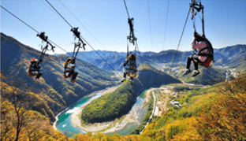

등록안내
사전등록자에 한해 온라인 교육에 참가하실 수 있습니다.
교육 참가비는 무료입니다.
등록문의: 033-1234-5678 / E-mail: info@jeongsunedu@gmail.com
그린 ODA
그린 ODA와 정선포럼
그린 ODA(공적개발원조)는 환경 친화적 요소를 지닌 ODA와 유사한 개념으로,
개발도상국의 정치, 경제, 사회적 여건을 개선하기 위하여, 환경에 대한 투자를 경제성장의 동력으로 활용함으로써, 개발도상국의 저탄소 녹색성장과 지속가능한 사회˙경제적 발전을 목적으로 하는 ODA 입니다.
이에 개발도상국의 자연 훼손과 환경 오염을 최소화 하고, 이를 다시 경제성장의 동력으로 활용함으로써 에너지 자원의 효율적 이용 및 기후변화 대응 역량 배양을 통한 지속가능한 발전을 도모하게 됩니다.
정선포럼은 지속가능한 지구와 미래세대를 위한 가치있는 것이 무엇이고 어떻게 전달할지에 대해 고민하고 실천하는 답을 찾아가는 포럼입니다.
정선포럼은 강원도 ODA 전담기구인 ‘강원국제개발협력센터’를 주최로 진행하는 교육을 통해 시민, 기업, 미디어, 정계 등의 인식개선이나 직접적인 참여를 이끌어 내고 그린 ODA의 긍정적인 임펙트가 더 시너지를 낼 수 있도록 지속적으로 가치를 실현하고자 합니다
이에 개발도상국의 자연 훼손과 환경 오염을 최소화 하고, 이를 다시 경제성장의 동력으로 활용함으로써 에너지 자원의 효율적 이용 및 기후변화 대응 역량 배양을 통한 지속가능한 발전을 도모하게 됩니다.
정선포럼은 지속가능한 지구와 미래세대를 위한 가치있는 것이 무엇이고 어떻게 전달할지에 대해 고민하고 실천하는 답을 찾아가는 포럼입니다.
정선포럼은 강원도 ODA 전담기구인 ‘강원국제개발협력센터’를 주최로 진행하는 교육을 통해 시민, 기업, 미디어, 정계 등의 인식개선이나 직접적인 참여를 이끌어 내고 그린 ODA의 긍정적인 임펙트가 더 시너지를 낼 수 있도록 지속적으로 가치를 실현하고자 합니다
‘지속가능한 지구와 균형 있는 인류의 삶’
인류는 급격한 기후변화와 예측할 수 없는 자연재해로 끊임없이 생존을 위협받고 있으며 청정한 자연환경과 공생할 권리까지 침해 받고 있습니다. 또한 인간의 이기심으로 비롯한 자연 생태계 파괴로 동식물은 삶의 터전을 잃었고, 전세계를 강타한 신종 바이러스로 국제사회는 마비되었으며, 국가와 인종간의 제노포비아가 심화되면서 세계시민의 정서는 차갑게 식어버렸습니다.
강원도와 강원국제회의센터는 세계시민이 참여하는 정선포럼 2020을 개최하여, 우리가 직면한 범지구적 문제의 해결을 인류사회의 공동의 목표로 삼고(SGDs), 지구적 핵심가치에 대해 서로 공유하여 지구와 인류, 국제사회와 시민 그리고 기업과 지역이 서로 상생하고 번영 할 수 있는 길을 지속적으로 모색하고자 합니다.
강원도와 강원국제회의센터는 세계시민이 참여하는 정선포럼 2020을 개최하여, 우리가 직면한 범지구적 문제의 해결을 인류사회의 공동의 목표로 삼고(SGDs), 지구적 핵심가치에 대해 서로 공유하여 지구와 인류, 국제사회와 시민 그리고 기업과 지역이 서로 상생하고 번영 할 수 있는 길을 지속적으로 모색하고자 합니다.
아젠다
- 글로벌 시티즌십
- 지구
- 인류
- 강원
- 기업과 사회
왜 정선인가?
- "올림픽 도시" 2018년 제23회 동계 올림픽의 알짜인 스키 활강 경기를 성공적으로 개최한 역사적인 올림픽 도시의 균형 발전
- "새로운 미래(Next Wave)" 지속가능하고 균형있는 발전과 더불어 포럼의 정체성 정립을 위한 정선에서의 새로운 시작 
- "상생과 번영의 상징" 평창 동계 올림픽의 개최지이자 대표 폐광지역인 '정선'에서 올림픽 정신을 계승하고 산업화로 훼손된 지역의 재생과 상생도모
교육안내
실시 개요
과 정 명 : 제6차 ODA교육 특별과정(온라인과정)
일 시 : 2020.11.30. ~ 12.2 (3일 간)
진행방법 : Zoom(줌) 어플리케이션을 통한 실시간 온라인 강의
대 상 : 정선군청 직원 및 국제개발에 관심이 있는 강원도민
수강인원 : 약 30여명
세부일정 및 내용
1일차
(11.30)
- 13:00 - 13:10 오리엔테이션
- 13:10 - 15:00 국제개발협력 ODA
- 15:10 - 17:00 국제개발협력 주요 이슈
2일차
(12.1)
- 13:00 - 15:00 SDGs와 지속가능개발에 대한 이해
- 15:10 - 17:00 코로나 19 시대의 SDGs 전망
3일차
(12.2)
- 13:00 - 14:50 포용적 성장과 녹색 성장
- 15:00 - 17:00 기후변화와 지속가능한 환경
- 17:10 - 17:10 강의 평가 및 안내
교육과정 운영
코로나19 여파로 인해 전 과정 실시간 온라인 강좌로 진행
줌(Zoom) 어플리케이션을 통해 실시간으로 진행될 예정이므로 실시간 질의응답 및 피드백 가능
수강생은 공개모집 절차를 통해 선발
- 구글 링크를 통한 접수 강의내용 평가실시 교육과정 이수자(80% 이상 수강) 중 강의평가 실시 수강생 대상 수료증 발급 강의 및 강의자료 무료 제공
- 구글 링크를 통한 접수 강의내용 평가실시 교육과정 이수자(80% 이상 수강) 중 강의평가 실시 수강생 대상 수료증 발급 강의 및 강의자료 무료 제공
녹색 국제개발협력 교육 강사 안내
-
이해균교수
한림대학교 글로벌협력대학원
- - 現 한림대학교 글로벌협력대학원 교수
- - 前 강원국제개발협력센터 센터장
- - 前 KOICA 이사
-
김수진센터장
강원국제개발협력센터
- - KOICA 사업전략기획팀 대리
(평화거버넌스 전문관)
- - KOICA 사업전략기획팀 대리
-
김 인센터장
강원국제개발협력센터
- - 現 강원국제개발협력센터 센터장
- - 現 연세대학교 미래캠퍼스 객원교수
- - 前 KOICA 이사
-
김부열교수
서울대학교 환경대학원
- - 現 서울대학교 환경대학원 교수
- - 前 KDI 한국개발연구원 교수
-
이현훈교수
강원대학교 국제무역학과
- - 現 강원대학교 국제무역학과 교수
- - 現 강원 국제도시훈련센터 원장
-
남재철교수
강원대학교 환경융합학부
- - 現 강원대학교 환경융합학부 객원교수
- - 前 서울대학교 농업생명과학대학 초빙교수
- - 前 제 12대 기상청장